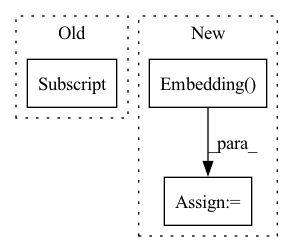

Pattern ID :371

Before Change
self.ITEM_ID = config["ITEM_ID_FIELD"]
self.NEG_ITEM_ID = config["NEG_PREFIX"] + self.ITEM_ID
self.n_items = len(dataset.field2id_token[self.ITEM_ID])
self.embedding_size = config["embedding_size"]
self.num_layers = config["num_layers"]
self.dropout = config["dropout"]
After Change
self.item_count = dataset.item_num
self.item_list_embedding = nn.Embedding(self.item_count, self.embedding_size)
self.position_list_embedding = nn.Embedding(max_item_list_length, self.embedding_size)
self.gru_layers = nn.GRU(
input_size=self.embedding_size,
hidden_size=self.embedding_size,
num_layers=self.num_layers,
In pattern: SUPERPATTERN
Frequency: 3
Non-data size: 3
Instances
Fragment ID: 2254694
Project Name: rucaibox/recbole
Commit Name: 839cdbd0699daa051ef673413a664f6f696cee5c
Time: 2020-08-19
Author: houyupeng@ruc.edu.cn
File Name: model/sequential_recommender/gru4rec.py
M Class Name: GRU4Rec
N Class Name: GRU4Rec
M Method Name: __init__(3)
N Method Name: __init__(3)
M Parent Class: SequentialRecommender
N Parent Class: SequentialRecommender
M File Name: model/sequential_recommender/gru4rec.py
N File Name: model/sequential_recommender/gru4rec.py
M Start Line: 26
M End Line: 38
N Start Line: 21
N End Line: 46
'>
Before Change
pretrained_dimension = field.vocab.vectors.size(-1)
self.pretrained_embeddings = [nn.Embedding(len(field.vocab), pretrained_dimension)]
self.pretrained_embeddings[0].weight.data = field.vocab.vectors
self.pretrained_embeddings[0].weight.requires_grad = False
dimension += pretrained_dimension
if self.project:
self.projection = Feedforward(dimension, trained_dimension)
After Change
dimension += pretrained_dimension
if trained_dimension > 0:
self.trained_embeddings = nn.Embedding(len(field.vocab), trained_dimension)
else:
self.trained_embeddings = None
if self.project:
self.projection = Feedforward(dimension, output_dimension)
'>
Fragment ID: 2254695
Project Name: stanford-oval/genienlp
Commit Name: 2769cc96e39c01875a18ae42196d5386de46c116
Time: 2019-03-19
Author: gcampagn@cs.stanford.edu
File Name: decanlp/models/common.py
M Class Name: Embedding
N Class Name: Embedding
M Method Name: __init__(6)
N Method Name: __init__(5)
M Parent Class: nn.Module
N Parent Class: nn.Module
M File Name: decanlp/models/common.py
N File Name: decanlp/models/common.py
M Start Line: 383
M End Line: 390
N Start Line: 378
N End Line: 395
'>
Before Change
self.bn = batchnorm_2d(num_features, momentum=0.001, affine=False)
self.embed = nn.Embedding(num_classes, num_features * 2)
self.embed.weight.data[:, :num_features]
self.embed.weight.data[:, num_features:]
def forward(self, x, y):
out = self.bn(x)
gamma, beta = self.embed(y).chunk(2, 1)
After Change
else:
self.bn = batchnorm_2d(num_features, momentum=0.001, affine=False)
self.embed0 = nn.Embedding(num_classes, num_features)
self.embed1 = nn.Embedding(num_classes, num_features)
def forward(self, x, y):
gain = (1 + self.embed0(y)).view(-1, self.num_features, 1, 1)
bias = self.embed1(y).view(-1, self.num_features, 1, 1)
'>
Fragment ID: 2254698
Project Name: postech-cvlab/pytorch-studiogan
Commit Name: 393a46a3d9141c8e30a15f267d37d639902e8784
Time: 2020-07-19
Author: first287@naver.com
File Name: models/model_ops.py
M Class Name: ConditionalBatchNorm2d
N Class Name: ConditionalBatchNorm2d
M Method Name: __init__(4)
N Method Name: __init__(4)
M Parent Class: nn.Module
N Parent Class: nn.Module
M File Name: models/model_ops.py
N File Name: models/model_ops.py
M Start Line: 141
M End Line: 143
N Start Line: 141
N End Line: 142